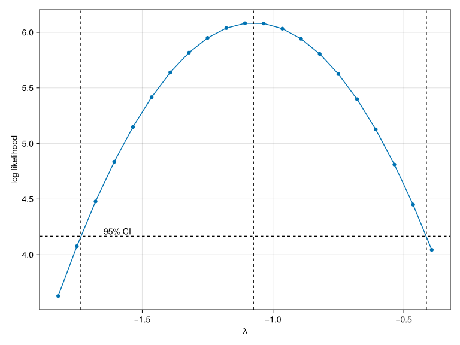
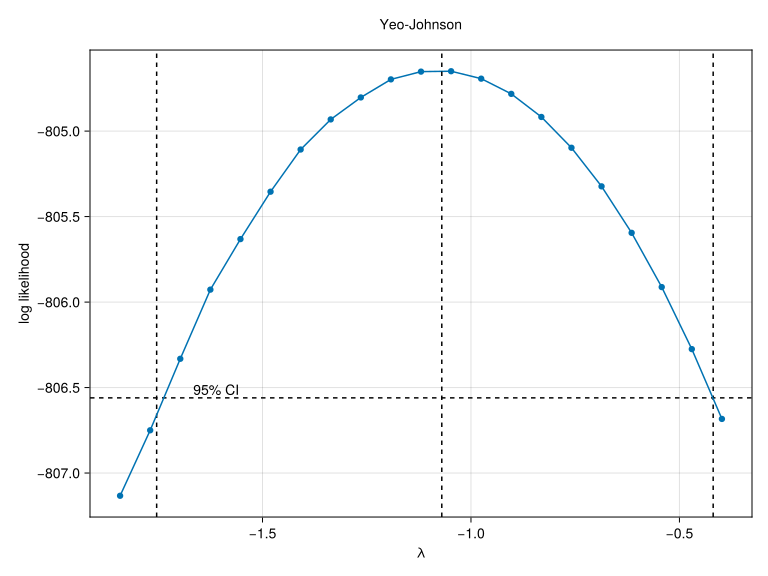

using DataFrames
using Effects
using MixedModels
using StandardizedPredictors
using SMLP2024: datasetTransformations of the predictors and the response
1 Predictors
When dealing with categorical variables, the choice of contrast coding impacts the interpretation of the coefficients of the fitted model but does not impact the predictions made by the model nor its general goodness of it. If we apply linear transformations to our predictors, then we see a similar pattern for continuous variables.
For example, in a model with age (in years) as a predictor, the untransformed variable yields a model where the intercept corresponds to age = 0, i.e. a newborn. For a typical experiment with young adult participants, this presents a few challenges in interpretation:
- newborns are widely outside the range of the observed data, so it seems problematic prima facie to interpret the estimated results for a value so far outside the range of the observed data
- we know that newborns and young adults are widely different and that the effect of age across childhood on most psychological and biological phenomena is not linear. For example, children do not grow at a constant rate from birth until adulthood.
Beyond centering a variable so that the center reflects an interpretable hypothesis, we may also want to scale a variable to move towards more easily interpretable units. For example, it is common to express things in terms of standard deviations instead of raw units – combined with centering, this yields \(z\)-scoring .
In addition to placing some variables on a more interpretable scale, \(z\)-scoring can be used across all continuous predictors to place them all on a single, common scale. The advantage to shared scale across all continuous predictors is that the magnitude of coefficient estimates are directly comparable. The disadvantage is that the natural units are lost, especially when the natural units are directly interpretable (e.g. milliseconds, grams, etc.).
Nonlinear transformations
There are also other possible nonlinear transformation, such as the logarithm or various polynomials, but we will leave this alone. Nonlinear transformation change the predictions of the model (in addition to changing the interpretation of the associated coefficients) and should be appropriately motivated by the data and theory.
In other words, from an interpretability standpoint, many continuous variables require just as much attention to their “coding” as categorical variables do.
Scaling can also help numerical aspects of model fitting
From a practical perspective, linear transformations of the predicots may also make model fitting easier. In an abstract mathematical sense, the scale of the variables does not matter, but computers and hence our software exist in a less idealized realm. In an intuitive sense, we can think of rounding error – if we are dealing with quantities on widely different scales, then the quantities on the larger scale will tend to dominate the quantities on the smaller scale. This is why many guides on how to deal with convergence issues suggest scaling your variables.
In Julia, the package StandardizedPredictors.jl takes advantage of this parallel between linear transformations and contrast coding and allows you to specify centering, scaling and \(z\)-transformations as part of the contrast specification.
We’ll also be using the Effects.jl package to demonstrate that these transformation do not change the model predictions.
slp = fit(MixedModel,
@formula(reaction ~ 1 + days + (1 + days |subj)),
dataset(:sleepstudy))| Est. | SE | z | p | σ_subj | |
| (Intercept) | 251.4051 | 6.6323 | 37.91 | <1e-99 | 23.7805 |
| days | 10.4673 | 1.5022 | 6.97 | <1e-11 | 5.7168 |
| Residual | 25.5918 |
days_centered = fit(MixedModel,
@formula(reaction ~ 1 + days + (1 + days |subj)),
dataset(:sleepstudy);
contrasts=Dict(:days => Center()))| Est. | SE | z | p | σ_subj | |
| (Intercept) | 298.5079 | 8.7950 | 33.94 | <1e-99 | 36.4260 |
| days(centered: 4.5) | 10.4673 | 1.5022 | 6.97 | <1e-11 | 5.7168 |
| Residual | 25.5919 |
If we look at the log-likelihood, AIC, BIC, etc. of these two models, we see that they are the same:
mods = [slp, days_centered]
DataFrame(; model=["original", "centered"],
AIC=aic.(mods),
AICc=aicc.(mods),
BIC=bic.(mods),
logLik=loglikelihood.(mods))2×5 DataFrame
| Row | model | AIC | AICc | BIC | logLik |
|---|---|---|---|---|---|
| String | Float64 | Float64 | Float64 | Float64 | |
| 1 | original | 1763.94 | 1764.42 | 1783.1 | -875.97 |
| 2 | centered | 1763.94 | 1764.42 | 1783.1 | -875.97 |
We can also see that models make identical predictions. The Effects package will compute predictions and estimated errors at a predefined grid. For more complicated models, we can also use the package to compute “typical” values, such as the mean, median or mode, for variables that we wish to ignore. We don’t need to worry about that right now, since we only have one non-intercept predictor.
# a fully crossed grid is computed from the elements of `design`.
# this is similar to how `expand.grid` works in R.
design = Dict(:days => [1, 4, 9])
effects(design, slp; level=0.95)3×5 DataFrame
| Row | days | reaction | err | lower | upper |
|---|---|---|---|---|---|
| Int64 | Float64 | Float64 | Float64 | Float64 | |
| 1 | 1 | 261.872 | 6.59566 | 248.945 | 274.8 |
| 2 | 4 | 293.274 | 8.31451 | 276.978 | 309.57 |
| 3 | 9 | 345.611 | 14.2167 | 317.747 | 373.475 |
effects(design, days_centered; level=0.95)3×5 DataFrame
| Row | days | reaction | err | lower | upper |
|---|---|---|---|---|---|
| Int64 | Float64 | Float64 | Float64 | Float64 | |
| 1 | 1 | 261.872 | 6.59563 | 248.945 | 274.8 |
| 2 | 4 | 293.274 | 8.31455 | 276.978 | 309.57 |
| 3 | 9 | 345.611 | 14.2167 | 317.746 | 373.475 |
If this sounds like effects or emmeans in R, that’s because there is a large overlap.
2 Response
In addition to transforming the predictors, we can also consider transforming the response (dependent variable). There are many different common possibilities – the log, the inverse/reciprocal, or even the square root – and it can be difficult to choose an appropriate one. For non-negative response (e.g., reaction time in many experiences), Box & Cox (1964) figured out a generalization that subsumes all of these possibilities:
\[ \begin{cases} \frac{y^{\lambda} - 1}{\lambda} &\quad \lambda \neq 0 \\ \log y &\quad \lambda = 0 \end{cases} \]
Our task is thus finding the appropriate \(\lambda\) such that the conditional distribution is as normal as possible. In other words, we need to find \(\lambda\) that results in the residuals are as normal as possible. I’ve emphasized conditional distribution and residuals because that’s where the normality assumption actually lies in the linear (mixed) model. The assumption is not that the response y, i.e. the uncondidtional distribution, is normally distributed, but rather that the residuals are normally distributed. In other words, we can only check the quality of a given \(\lambda\) by fitting a model to the transformed response. Fortunately, BoxCox.jl makes this easy.
The fit function takes two arguments: - the transformation to be fit (i.e. BoxCoxTransformation) - the model fit to the original data
using BoxCox
bc = fit(BoxCoxTransformation, slp)Box-Cox transformation
estimated λ: -1.0747
resultant transformation:
y^-1.1 - 1
------------
-1.1For large models, fitting the BoxCoxTransformation can take a while because a mixed model must be repeatedly fit after each intermediate transformation.
Although we receive a single “best” value (approximately -1.0747) from the fitting process, it is worthwhile to look at the profile likelihood plot for the transformation:
# we need a plotting backend loaded before we can use plotting functionality
# from BoxCox.jl
using CairoMakie
boxcoxplot(bc; conf_level=0.95)
Here we see that -1 is nearly as good. Moreover, time\(^{-1}\) has a natural interpretation as speed. In other words, we can model reaction speed instead of reaction time. Then instead of seeing whether participants take longer to respond with each passing day, we can see whether their speed increases or decreases. In both cases, we’re looking at whether they respond faster or slower and even the terminology fast and slow suggests that speed is easily interpretable.
If we recall the definition of the Box-Cox transformation from above: \[ \begin{cases} \frac{y^{\lambda} - 1}{\lambda} &\quad \lambda \neq 0 \\ \log y &\quad \lambda = 0 \end{cases} \]
then we see that there is a normalizing denominator that flips the sign when \lambda < 0. If we use the full Box-Cox formula, then the sign of the effect in our transformed and untransformed model remains the same. While useful at times, speed has a natural interpretation and so we instead use the power relation, which is the actual key component, without normalization.
Because reaction is stored in milliseconds, we use 1000 / reaction instead of 1 / reaction so that our speed units are responses per second.
model_bc = fit(MixedModel,
@formula(1000 / reaction ~ 1 + days + (1 + days | subj)),
dataset(:sleepstudy))| Est. | SE | z | p | σ_subj | |
| (Intercept) | 3.9658 | 0.1056 | 37.55 | <1e-99 | 0.4190 |
| days | -0.1110 | 0.0151 | -7.37 | <1e-12 | 0.0566 |
| Residual | 0.2698 |
For our original model on the untransformed scale, the intercept was approximately 250, which means that the average response time was about 250 milliseconds. For the model on the speed scale, we have an intercept about approximately 4, which means that the average response speed is about 4 responses per second, which implies that the the average response time is 250 milliseconds. In other words, our new results are compatible with our previous estimates.
This example also makes something else clear: much like transformations of the predictors, transforming the response changes the hypothesis being tested. While it is relatively easy to re-formulate hypothesis about reaction time into hypotheses about speed, it can be harder to re-formulate other hypotheses. For example, a log transformation of the response changes the hypotheses on the original scale from additive effects to multiplicative effects. As a very simple example, consider two observations y1 = 100 and y2 = 1000. On the original scale, there y2 = 10 * y1. But on the \(\log_{10}\) scale, log10(y2) = 1 + log10(y1). In other words: I recommend keeping interpretability of the model in mind before blindly chasing perfectly fulfilling all model assumptions.
There are two other little tricks that BoxCox.jl has to offer. First, the fitted transformation will work just like a function:
bc(1000)0.9299202243766808bc.(response(slp))180-element Vector{Float64}:
0.9280071533109451
0.9281008004980732
0.9280202732761681
0.9285950348759796
0.9287948232963694
0.9290453817984637
0.9289143340819649
0.9283762261753863
0.9291020425612259
0.9292149261473703
⋮
0.9282383517103107
0.9284326403128913
0.9285246243376963
0.928352836088982
0.9286450699122083
0.9286737217944607
0.9287229751967703
0.9288548849797978
0.9288308689512543Second, the decades since the publication of Box & Cox (1964) have seen many proposed extensions to handle that that may not be strictly positive. One such proposal from Yeo & Johnson (2000) is also implemented in BoxCox.jl. The definition of the transformation is:
\[ \begin{cases} ((y_+1)^\lambda-1)/\lambda & \text{if }\lambda \neq 0, y \geq 0 \\ \log(y_i + 1) & \text{if }\lambda = 0, y \geq 0 \\ -((-y_ + 1)^{(2-\lambda)} - 1) / (2 - \lambda) & \text{if }\lambda \neq 2, y < 0 \\ -\log(-y_ + 1) & \text{if }\lambda = 2, y < 0 \end{cases} \]
and we can fit it in BoxCox.jl with
yj = fit(YeoJohnsonTransformation, slp)Yeo-Johnson transformation
estimated λ: -1.0700
p-value: <1e-09
resultant transformation:
For y ≥ 0,
(y + 1)^-1.1 - 1
------------------
-1.1
For y < 0:
-((-y + 1)^(2 - -1.1) - 1)
----------------------------
(2 - -1.1)f = boxcoxplot(yj; conf_level=0.95)
f[0, :] = Label(f, "Yeo-Johnson"; tellwidth=false)
f
References
Box, G. E. P., & Cox, D. R. (1964). An analysis of transformations. Journal of the Royal Statistical Society: Series B (Methodological), 26(2), 211–243. https://doi.org/10.1111/j.2517-6161.1964.tb00553.x
Yeo, I.-K., & Johnson, R. A. (2000). A new family of power transformations to improve normality or symmetry. Biometrika, 87(4), 954–959. https://doi.org/10.1093/biomet/87.4.954